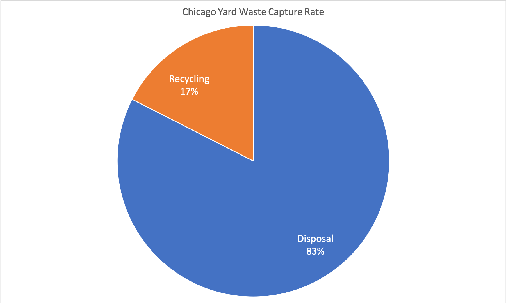

Comparison Between Chicago and Other Cities
Analysis
Chicago’s system of waste disposal ranks about average among other major cities. This system relies heavily on a 311 phone line for residents to call and request waste pick up. As shown in the data below, this system is not producing optimal results.With Chicago ranking number 11 out of 27 on Siemen’s Green City Index rankings. In comparison, models used by other cities with higher scores, such as Seattle and Los Angeles, involve regular pick-ups and laws or fines to encourage participation, as well as emphasis on spreading disposal information to encourage proper disposal. Los Angeles, for example, increased their waste diversion through a law passed state-wide requiring 50% waste reduction. Seattle developed a system with weekly collection that requires the residents to rent a collection bin or compost waste in their backyards, with fees incurred for improper disposal. These are both systems that have obvious benefits in terms of increasing the percentage of yard waste being properly captured.
Data
| City |
Green City Index Score |
Rank Out of 27 |
| Seattle |
79.1 |
4 |
| Los Angeles |
72.5 |
7 |
| Chicago |
66.9 |
11 |
| City |
Yard Waste Capture Rate |
| Los Angeles |
92% |
| Seattle |
69% |
| Chicago |
17% |
| Material |
Disposal |
Recycling |
Capture Rate |
| Yard Waste |
32,666 |
6,926 |
17% |
